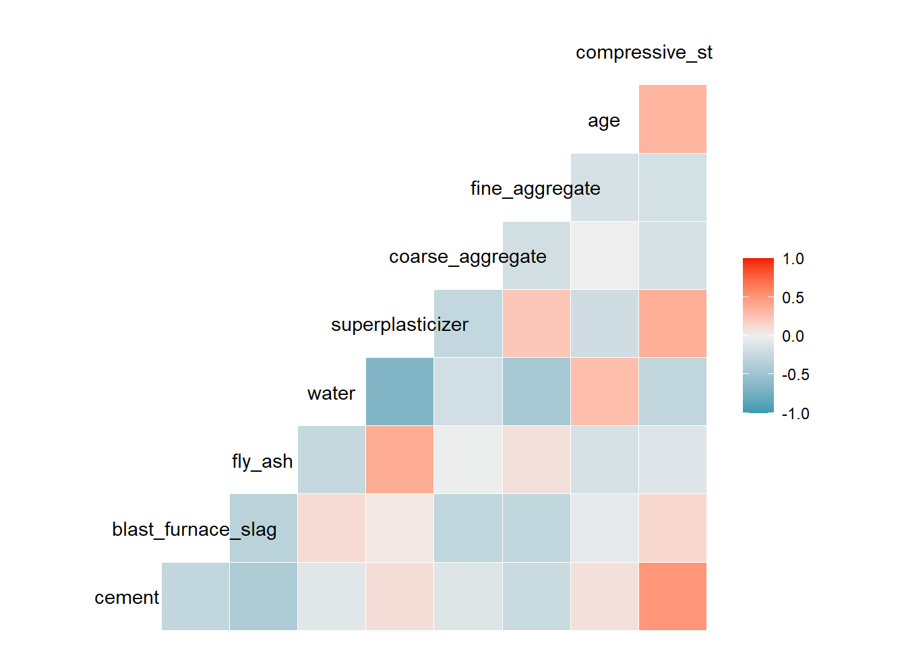
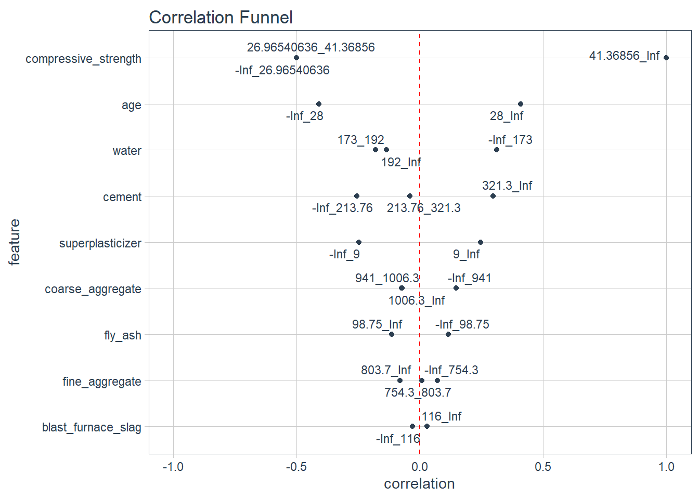

Several exploratory data analysis (EDA) packages are used to evaluate the concrete dataset.
In the previous post, the concrete dataset was introduced. In this post, we further explore topics such as data completeness, distributions and correlations both with the target variable (compressive strength) and between predictor variables (ingredients). I use Several R packages which I have found to make this analysis quite simple and efficient: skimr, GGally and correlationFunnel.
Load libraries
library(readxl)
library(tidyverse)
#EDA
library(skimr)
library(GGally)
library(correlationfunnel)A good first analysis once the dataset is loaded is to use the skimr package to provide an overview of the data columns.
skimr::skim(concrete_tbl)| Name | concrete_tbl |
| Number of rows | 1030 |
| Number of columns | 9 |
| _______________________ | |
| Column type frequency: | |
| numeric | 9 |
| ________________________ | |
| Group variables | None |
Variable type: numeric
| skim_variable | n_missing | complete_rate | mean | sd | p0 | p25 | p50 | p75 | p100 | hist |
|---|---|---|---|---|---|---|---|---|---|---|
| cement | 0 | 1 | 281.17 | 104.51 | 102.00 | 192.38 | 272.90 | 350.00 | 540.0 | ▆▇▇▃▂ |
| blast_furnace_slag | 0 | 1 | 73.90 | 86.28 | 0.00 | 0.00 | 22.00 | 142.95 | 359.4 | ▇▂▃▁▁ |
| fly_ash | 0 | 1 | 54.19 | 64.00 | 0.00 | 0.00 | 0.00 | 118.27 | 200.1 | ▇▁▂▂▁ |
| water | 0 | 1 | 181.57 | 21.36 | 121.75 | 164.90 | 185.00 | 192.00 | 247.0 | ▁▅▇▂▁ |
| superplasticizer | 0 | 1 | 6.20 | 5.97 | 0.00 | 0.00 | 6.35 | 10.16 | 32.2 | ▇▆▁▁▁ |
| coarse_aggregate | 0 | 1 | 972.92 | 77.75 | 801.00 | 932.00 | 968.00 | 1029.40 | 1145.0 | ▃▅▇▅▂ |
| fine_aggregate | 0 | 1 | 773.58 | 80.18 | 594.00 | 730.95 | 779.51 | 824.00 | 992.6 | ▂▃▇▃▁ |
| age | 0 | 1 | 45.66 | 63.17 | 1.00 | 7.00 | 28.00 | 56.00 | 365.0 | ▇▁▁▁▁ |
| compressive_strength | 0 | 1 | 35.82 | 16.71 | 2.33 | 23.71 | 34.44 | 46.14 | 82.6 | ▅▇▇▃▁ |
The good news is that there were no missing data points in the concrete dataset. There are concrete compositions with no blast furnace slag, fly ash or superplasticizer. The age before testing is skewed to lower age before testing. These observations are further supported looking at the histograms shown below.
concrete_tbl %>%
pivot_longer(cement:age, names_to="ingredient", values_to = "amount") %>%
ggplot(aes(x=amount)) +
geom_histogram(bins = 30) +
facet_wrap(~ingredient, scales = "free")
Variable correlations
Next, we analyze the correlations between variables. When the amount of one ingredient is increased, we expect one or more of the other ingredients in the concrete mixture to decrease. So, some correlation between the concrete ingredients is expected.
GGally::ggcorr(concrete_tbl)
The correlation analysis showed a strong, positive correlation with cement content and compressive strength and less strong correlations with age with compressive strength and superplasticizer with compressive strength. An inverse correlation between water and superplasticizer was detected perhaps due to the water content of the superplasticizer requiring less additional water in the formulation.
Another way of visualizing the correlation of variables with the property you wish to predict is the called a “correlation funnel”.
concrete_tbl %>%
binarize(n_bins = 3) %>%
correlate(`compressive_strength__41.36856_Inf`) %>%
plot_correlation_funnel(interactive = FALSE)
The correlation funnel shows some degree of correlation between the cement, water, superplasticizer and age with compressive strength. The fly ash, coarse and fine aggregate and blast furnace slag showed very little correlation with compressive strength.
Summary
This post has shown several techniques for exploring the concrete dataset. The next post will use a generalized linear modeling approach to predict concrete compressive strength and compare the results with the conventional material modeling approach. Subsequent articles will use machine learning techniques such as artificial neural networks and extreme gradient boosting.
Warning: package 'sessioninfo' was built under R version 4.2.1Warning in system("quarto --version", intern = TRUE): running command 'quarto --
version' had status 255
Warning in system("quarto --version", intern = TRUE): running command 'quarto --
version' had status 255─ Session info ───────────────────────────────────────────────────────────────
setting value
version R version 4.2.0 (2022-04-22 ucrt)
os Windows 10 x64 (build 19043)
system x86_64, mingw32
ui RTerm
language (EN)
collate English_United States.utf8
ctype English_United States.utf8
tz America/Chicago
date 2022-09-01
pandoc 2.18 @ C:/Program Files/RStudio/bin/quarto/bin/tools/ (via rmarkdown)
quarto @ C:\\PROGRA~1\\RStudio\\bin\\quarto\\bin\\quarto.cmd
─ Packages ───────────────────────────────────────────────────────────────────
! package * version date (UTC) lib source
P correlationfunnel * 0.2.0 2020-06-09 [?] CRAN (R 4.2.1)
P dplyr * 1.0.10 2022-09-01 [?] CRAN (R 4.2.0)
P forcats * 0.5.2 2022-08-19 [?] CRAN (R 4.2.1)
P GGally * 2.1.2 2021-06-21 [?] CRAN (R 4.2.1)
P ggplot2 * 3.3.6 2022-05-03 [?] CRAN (R 4.2.1)
P purrr * 0.3.4 2020-04-17 [?] CRAN (R 4.2.1)
P readr * 2.1.2 2022-01-30 [?] CRAN (R 4.2.1)
P readxl * 1.4.1 2022-08-17 [?] CRAN (R 4.2.1)
P sessioninfo * 1.2.2 2021-12-06 [?] CRAN (R 4.2.1)
P skimr * 2.1.4 2022-04-15 [?] CRAN (R 4.2.1)
P stringr * 1.4.1 2022-08-20 [?] CRAN (R 4.2.1)
P tibble * 3.1.8 2022-07-22 [?] CRAN (R 4.2.1)
P tidyr * 1.2.0 2022-02-01 [?] CRAN (R 4.2.1)
P tidyverse * 1.3.2 2022-07-18 [?] CRAN (R 4.2.1)
[1] C:/Users/David Zoller/AppData/Local/Temp/Rtmp8214Ne/renv-library-3314733b7c41
[2] C:/Users/David Zoller/Documents/datadavidz.github.io/renv/library/R-4.2/x86_64-w64-mingw32
[3] C:/Program Files/R/R-4.2.0/library
P ── Loaded and on-disk path mismatch.
──────────────────────────────────────────────────────────────────────────────